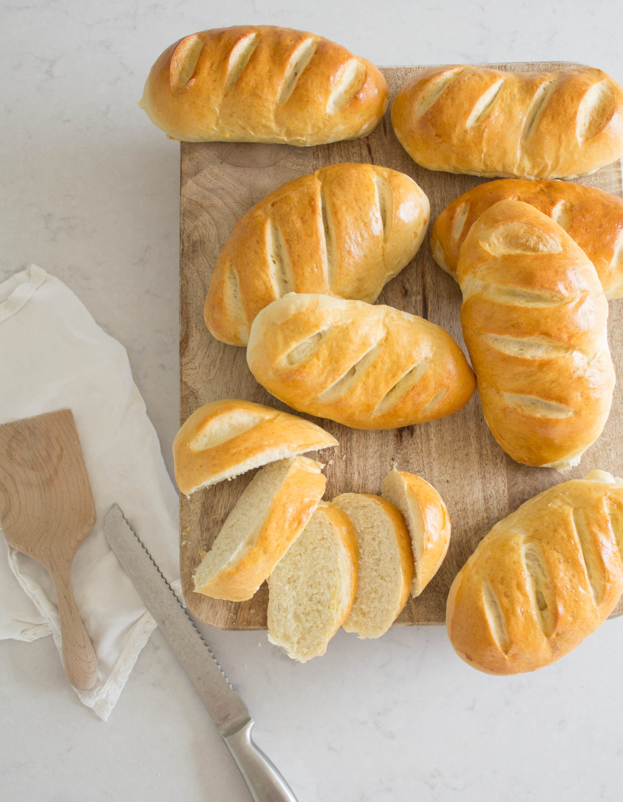

A hoagie roll is a long and flat roll that's traditionally used to prepare hoagie sandwiches, submarine sandwiches, and sometimes even Philadelphia cheesesteak sandwiches. The inside should be soft, and the exterior should be a bit harder. These rolls are popular in the United States of America, and they're usually made with a combination of flour, milk, oil, eggs, yeast, salt, and sugar, while some versions might include sesame seeds on top.
Meal prep time : 1 hour 15 minutes
Servings : 18